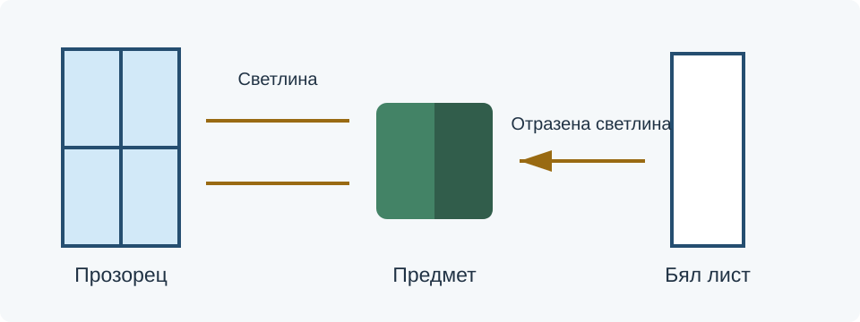

След урока ще можете да:
- разпознавате силует, твърда сянка, отражение и разсейващ фон;
- подобрявате кадър чрез промяна на позиция, светлина и обкръжение;
- сравнявате първа и повторна снимка с конкретно обяснение.
1. Посока и характер на светлината
Светлината определя кои части на обекта се виждат и как се усещат формата и текстурата. Започнете с наблюдение: откъде идва, кои части са най-светли и къде попадат сенките?
- Светлина отпред: детайлите могат да се виждат ясно, но формата понякога изглежда по-плоска.
- Странична светлина: сенките подчертават обема и повърхността.
- Светлина отзад: яркият фон може да остави обекта тъмен. Това може да е търсен силует, но не е подходящо, ако трябва да се виждат детайлите.
Силното пряко слънце или малък ярък източник често създава отчетливи сенки. Светлина от голяма светла област, например прозорец без пряко слънце, обикновено е по-мека. Променете мястото или часа, когато това е възможно.
2. Прост опит с прозорец и бял лист
Поставете предмет близо до прозорец със светлина отстрани. Направете снимка. После поставете чист бял лист или картон от сенчестата страна и сравнете резултата.

Целта е да се виждат детайли и в сенчестата част, като формата остане различима. Проверете и най-светлите области: ако изглеждат напълно бели без текстура, променете осветяването или експозицията.
Ако цветовете изглеждат неестествени, огледайте източниците. Смес от дневна светлина и различно оцветени лампи може да даде различни оттенъци в отделните части на кадъра.
3. Какво има зад основния обект?
Фонът може да обяснява средата, но може и да отвлича вниманието. Проверете ярките петна, надписите, кабелите и предметите около обекта.
- Преместете се леко встрани, за да избегнете линия или предмет, който сякаш „излиза“ от главата на човек.
- Сравнете по-спокоен фон със сложния първоначален.
- Оставете само предметите, които помагат на посланието.
- Проверете отраженията в стъкло, огледало и лъскави повърхности.
- Не премахвайте важна част от средата само защото е по-лесно — решението трябва да съответства на темата.
За снимка на изработен предмет чиста маса може да е подходяща. За снимка на клубна дейност част от работното пространство може да дава необходим контекст.
4. Проверка преди втория кадър
- Обектив: проверете за замърсяване и отпечатъци.
- Фокус: уверете се, че важната част е ясна; при телефон докосването на обекта често задава фокус.
- Краища: огледайте отрязани пръсти, части от предмети и случайни фрагменти.
- Сенки: вижте дали вашата сянка или сянката на телефона не покрива обекта.
- Отражения: проверете какво допълнително се вижда в лъскавите повърхности.
- Хоризонт и вертикали: преценете дали наклонът е търсен или случаен.
Разгледайте снимката увеличена, а не само като малка миниатюра. Ако проблемът може да се реши на място, направете повторен кадър.
5. Практическа задача: три двойки снимки
Използвайте предмет или място от урок 28. Работете с един и същ основен обект, за да сравнявате конкретните промени.
- Светлина: направете първи кадър, после променете посоката на светлината или добавете бял отражател. Направете втори.
- Фон: снимайте с първоначалния фон. После променете позицията или подредбата и снимайте отново.
- Детайл: открийте конкретен проблем — отражение, сянка, отрязана част или наклон. Поправете го и повторете.
- За всяка двойка запишете: „Проблем → промяна → видим резултат“.
- Покажете най-ясната двойка на съученик и сравнете наблюденията си.
Променяйте по един основен фактор между двата кадъра. Иначе е трудно да обясните кое действие е довело до подобрението.
Резултат: три двойки снимки и кратки бележки за промените. Запазете кадрите за подбора в следващия урок.
6. Самопроверка
Винаги ли светлината отзад е грешка?
Не. Тя може да създаде търсен силует. Проблем е, когато скрива детайли, които трябва да се виждат.
Защо използваме бял лист?
Той може да върне част от светлината към сенчестата страна на предмета.
Какво печелим от повторното заснемане?
Можем да поправим реалното осветяване, позиция и фон, вместо да се опитваме да компенсираме всичко с обработка.
Защо променяме по един фактор?
За да свържем видимия резултат с конкретното действие.
Прочетете още
National Museums Scotland — осветяване и фотографиране на предмети (на английски). За композицията прегледайте урок 28.